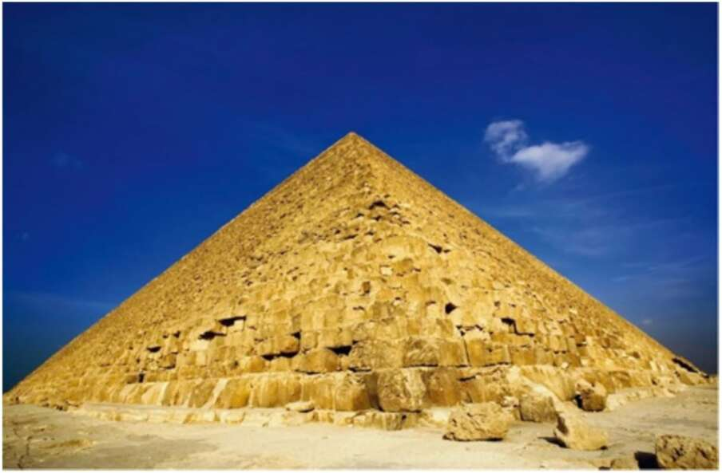

18. The Great Pyramid of Giza. The kind of thing rich people in ancient Egypt did with their money. Like the elite of ancient Egypt, most people in most cultures dedicate their lives to building pyramids. Only the names, shapes and sizes of these pyramids change from one culture to the other. They may take the form, for example, of a suburban cottage with a swimming pool and an evergreen lawn, or a gleaming penthouse with an enviable view. Few question the myths that cause us to desire the pyramid in the first place. c. The imagined order is inter-subjective. Even if by some superhuman effort I succeed in freeing my personal desires from the grip of the imagined order, I am just one person. In order to change the imagined order I must convince millions of strangers to cooperate with me. For the imagined order is not a subjective order existing in my own imagination — it is rather an inter-subjective order, existing in the shared imagination of thousands and millions of people. In order to understand this, we need to understand the difference between ‘objective’, ‘subjective’, and ‘inter-subjective’. An objective phenomenon exists independently of human consciousness and human beliefs. Radioactivity, for example, is not a myth. Radioactive emissions occurred long before people discovered
